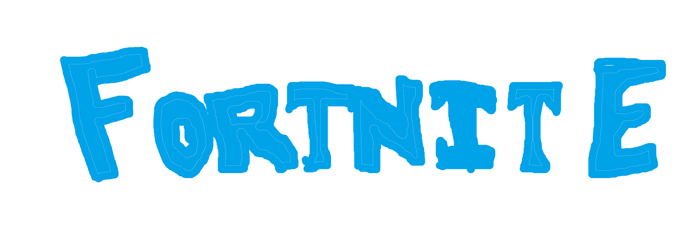

Cómo no puede faltar uno de los juegos más jugados de todos los tiempos, ¡Fortnite!
Estando con más de 200 M de descargas mundialmente, es uno de los juegos más jugados de todos los
tiempos, con solo Minecraft superándolo.
Trata de un ''Battle Royale'', donde tienes que jugar mejor que nada menos que 99 jugadores en tu Lobby, ya
sea construyendo con su propia mecánica, disparándoles, atropellándoles, ¡o explotándoles!
Volver a página principal